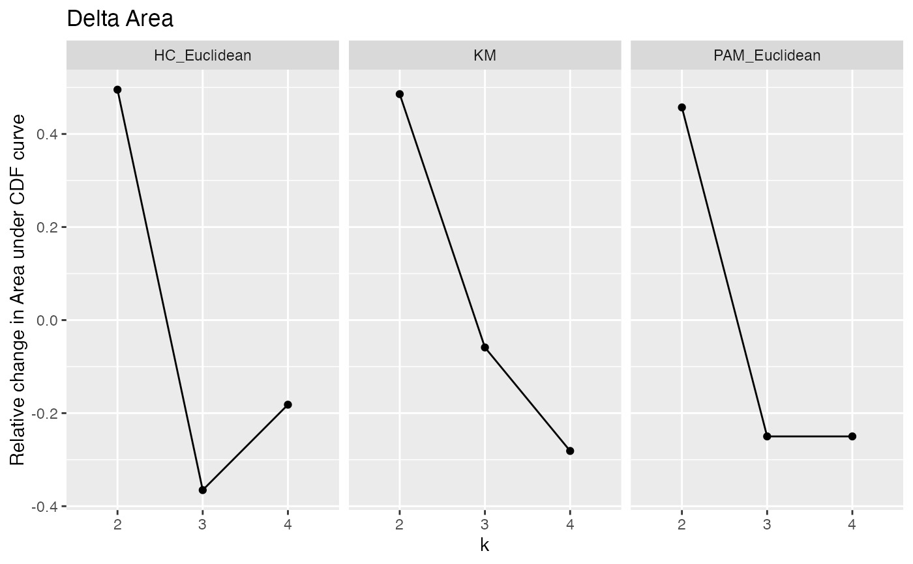
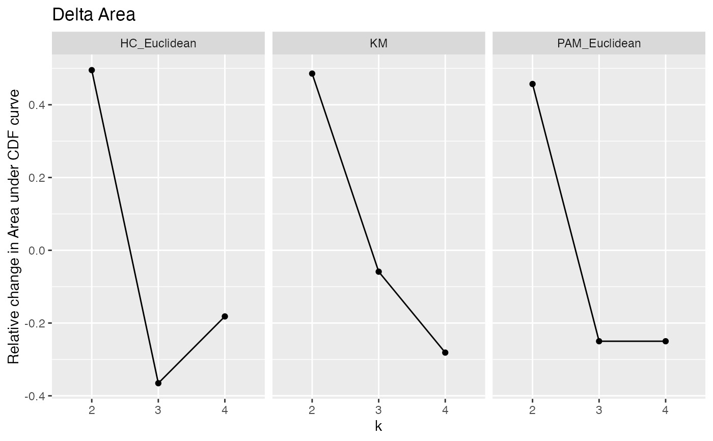

Graph cumulative distribution function (CDF) graphs, relative change in area under CDF curves, heatmaps, and cluster assignment tracking plots.
Usage
graph_cdf(mat)
graph_delta_area(mat)
graph_heatmap(mat, main = NULL)
graph_tracking(cl)
graph_all(x)Arguments
- mat
same as
x, or a list of consensus matrices computed fromxfor faster results- main
heatmap title. If
NULL(default), the titles will be taken from names inmat- cl
same as
x, or a matrix of consensus classes computed fromxfor faster results- x
an object from
consensus_cluster()
Value
Various plots from graph_*{} functions. All plots are
generated using ggplot, except for graph_heatmap, which uses
NMF::aheatmap(). Colours used in graph_heatmap and graph_tracking
utilize RColorBrewer::brewer.pal() palettes.
Details
graph_cdf plots the CDF for consensus matrices from different algorithms.
graph_delta_area calculates the relative change in area under CDF curve
between algorithms. graph_heatmap generates consensus matrix heatmaps for
each algorithm in x. graph_tracking tracks how cluster assignments change
between algorithms. graph_all is a wrapper that runs all graphing
functions.
Examples
# Consensus clustering for 3 algorithms
library(ggplot2)
set.seed(911)
x <- matrix(rnorm(80), ncol = 10)
CC1 <- consensus_cluster(x, nk = 2:4, reps = 3,
algorithms = c("hc", "pam", "km"), progress = FALSE)
# Plot CDF
p <- graph_cdf(CC1)
 # Change y label and add colours
p + labs(y = "Probability") + stat_ecdf(aes(colour = k)) +
scale_color_brewer(palette = "Set2")
# Change y label and add colours
p + labs(y = "Probability") + stat_ecdf(aes(colour = k)) +
scale_color_brewer(palette = "Set2")
 # Delta Area
p <- graph_delta_area(CC1)

# Heatmaps with column side colours corresponding to clusters
CC2 <- consensus_cluster(x, nk = 3, reps = 3, algorithms = "hc", progress =
FALSE)
graph_heatmap(CC2)
# Delta Area
p <- graph_delta_area(CC1)

# Heatmaps with column side colours corresponding to clusters
CC2 <- consensus_cluster(x, nk = 3, reps = 3, algorithms = "hc", progress =
FALSE)
graph_heatmap(CC2)
 # Track how cluster assignments change between algorithms
p <- graph_tracking(CC1)
# Track how cluster assignments change between algorithms
p <- graph_tracking(CC1)